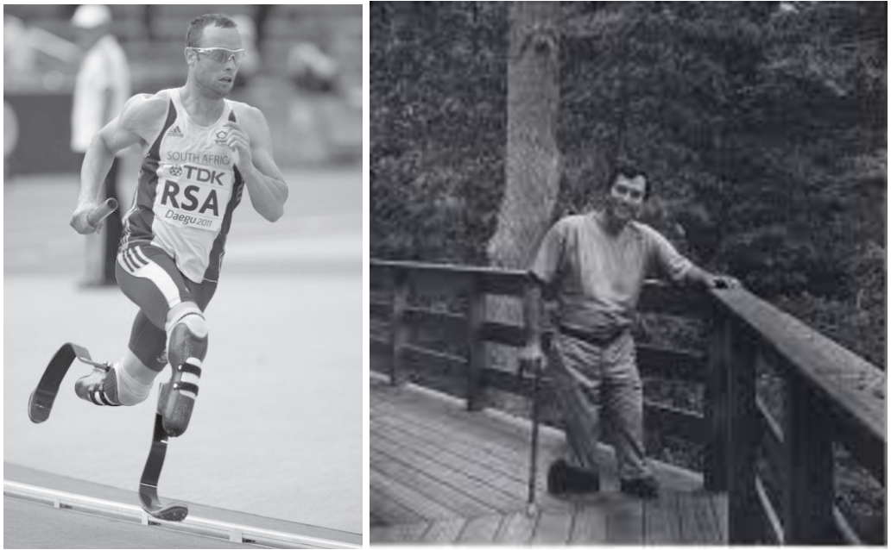

In June, I received a surprising request asking for my permission to use, in a German academic journal, Robert Giard’s 1994 photograph of me. I was surprised because I did not own the rights to the photograph. According to the email the person who owns the rights to the photograph by Giard, who died in 2002, would not grant permission to use the photograph in the way the editor wanted. In the email thread, the copyright owner said he did “not feel comfortable giving permission for this particular use of the portrait of Kenny Fries.”
Giard’s photograph shows me on the deck of where I lived for a time in Provincetown. Unlike most of the professional photos taken of me over the years, Giard’s photograph, part of “Particular Voices,” his important portrait series of gay and lesbian writers (http://robertgiardfoundation.org/particular-voices), is a full-length portrait in which I fit naturally into the forested landscape on the deck of where I then lived in Provincetown.
I was also surprised about, to use the copyright owner’s words, “this particular use” of the photograph. The editor wanted to crop the photograph so it only showed, close-up, the lower portion of the photograph, which showed my cane and shoes. Next to it would be a similarly cropped version of a photo of South African Olympic runner Oscar Pistorius, taken long before his trial for murdering his girlfriend.
According to the journal’s editor, “the issue as a whole deals with technical enhancements to the human body. In the article in question, the focus is on the – remarkable and positive – way Kenny Fries handles his disablement, and is compared to other possibilities, as for instance seen in the life of Oscar Pistorius. To draw the reader’s attention to Kenny Fries’ particular corporal enhancement, his shoes, we decided to appropriately clip the original photograph.”
But, in my view, as I responded to the editor, I would not grant permission to use the photograph in the way he intended because of the cropping of Giard’s photograph. Without the full photograph, and thus the full person (which just happens to be me), the visual representation is medicalized and doesn't represent the full person, which I think was Giard's intention, as well as what I am after in my work (as well as in my life).
However, I did offer that if he decided to print the full, uncropped photograph I might reconsider. I also mentioned that I don’t think of my shoes as a “corporal enhancement” but as simply a utilitarian adaptation not unlike the multiple adaptations many nondisabled people use in their daily lives. A fork, for example.
A trusted disabled friend agreed that I should not let the editor use the cropped photograph. She made a pointed reference to the unchanged title of the photograph, “Kenny Fries,” even though the now cropped photograph was only of my shoes. It was as if Kenny Fries was his (my) shoes, his (my) disability. My friend reminded me of something I’ve often said: “The trouble with images is that you'll always have the spectacle part of it...I think we can't get out of this completely when showing images of people with disabilities, unfortunately.” See the history of freak shows, for example.
A further surprise arrived the next day when the editor wrote and asked me if I’d give my permission to using the full photograph. I thought that my detailed explanation in my email would be off-putting. I had only made this offer out of a feeling a bit guilty and wanted to soften the blow. I never thought he’d follow up on my offer.
But he did. And after a bit more thought I granted the permission for the editor to use both the photograph in toto. Pistorius and myself, side by side. Though I still felt a bit squeamish about giving the permission, at least I had restored, in this case, the fullness of body, and self, both to Pistorius and me.
